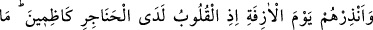
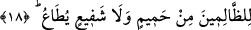
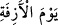

bakmaz, hep kendi ayıbını araştırır; sürekli kendi hesabını yapar. Nitekim hadiste,
“Hesâba çekilmeden önce kendinizi hesâba çekiniz...” buyrulmuştur.
Din ulularından biri bir gün mektup yazdı. Geçici bir evde idi. Şöyle dedi: “O
mektubu kurusun diye toprağa gömmek istedim. Gönlümden yarın kıyâmette bunun
uhdesinden gelemem diye içimden geçirdim. Hâtiften şöyle ses geldi: Evet, mektubunu
falanın evinde kurutan kimse, bu yüzden kıyâmet günü Allah huzurunda hesâbının ne
kadar uzayacağını bilecektir.”
Bir hadîs-i kudsîde Cenab-ı Hakk’ın şöyle buyuracağı vârid olmuştur: “Hükümran
benim! Hâkim benim! Üzerinde bir kul hakkı olup da onu geri almadıkça, ne bir
cennetliğin cennete girmesi mümkündür; ne de bir cehennemliğin cehenneme
girmesi.”[173] Bu ifâdesinden sonra Hz. Peygamber bu âyet-i celileyi okumuştur.
Bazı rivâyetlerde ise “boynuzlu koyundan boynuzsuz koyunun hakkını almadıkça”
ifadesi geçmektedir. Yalnız burada bahsedilen kısas, mükellef kılma şeklinde değil de
karşılığını verip ödeşme şeklinde bir kısastır.
Zulüm ehli ile ilgili haberde şaşılacak bir hal vardır.
Zulmü yapmanın vebâli şaşırtıcıdır.
Zulümden kaçın çünkü cezâ gününde,
“Lâ zulme’l-yevm” acayip bir tembihtir.
18. Yaklaşan gün hususunda onları uyar! Çünkü o onda dehşet içinde
yutkunurken yürekleri ağızlarına gelmiştir. Zalimlerin ne dostu ne de sözü dinlenir
şefaatçısı vardır.
Ey Muhammed! “Onları,” Mekkelileri, “yüreklerin ağıza geleceği,” tasadan
yutkunacakları “yaklaşan kıyamet günü ile uyar,” korkut. “__WORD__, gelmesi iyice
yaklaşan gün demek olup maksad kıyamet günüdür. “Yaklaştı o yaklaşan! (Yani
kıyâmet yaklaşmıştır)” (en-Necm 53/57) âyeti de bunun bir benzeridir. Kıyâmete “âzife”
denmesi yakınlığından dolayıdır. Çünkü âhirete yönelik tüm umutlarını kaybetmiş
kâfirler ne kadar uzak görürse görsün “her gelecek yakındır.”
Hadiste şöyle buyrulur: “Ben ve kıyâmet işte şu ikisi gibi yakın olarak gönderildik,
hatta o nerede ise benden bile önce gelecekti.”[174]
Peygamberimiz (s.a.), “şu ikisi” derken işaret parmağıyla orta parmağını göstermiş
ve âdeta “benimle kıyâmet arasındaki zaman aralığı, daha önce geçmiş zamana göre orta
parmağın işâret parmağına karşı olan fazlalığı gibidir” demek istemiştir. Böylece,